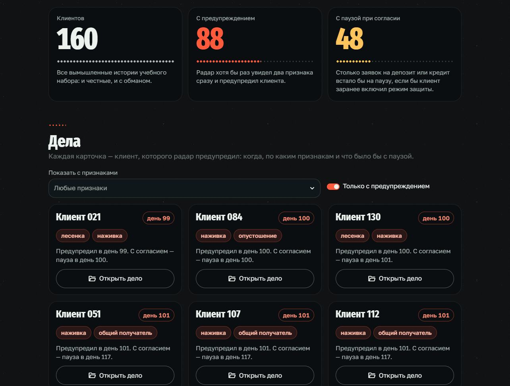

День 65
«Консультант»
Пишет в мессенджере, обещает доход и просит начать с малого.
Клиента неделями втягивают в лже-брокера. Тұмар видит, как отдельные переводы складываются в схему, и предупреждает до того, как он закроет депозит или возьмёт кредит.
Как это выглядитСуммы новым получателям растут. Похоже, вам вернули немного денег, чтобы вызвать доверие.
Так выглядит медленная схема глазами банка. Ни одного подозрительного действия в отдельности — только сумма переводов во времени.
День 65
Пишет в мессенджере, обещает доход и просит начать с малого.
День 75
На экране «прибыль» растёт, но деньги никуда не вложены.
День 101–107
11 100 → 29 800 ₸ одному и тому же получателю.
Сигнал: лесенкаДень 111
«Выведите немного» — чтобы клиент поверил, что деньги настоящие.
Сигнал: наживкаДень 116
А впереди — заявка на закрытие вклада на 2 154 900 ₸.
Сигналы: опустошение, доплатаДни и суммы — из демо-истории Мейрамбека. Один перевод здесь ничего не доказывает: смысл появляется, только когда сигналы складываются.
Радар смотрит только прошлое и текущую операцию. Метку обмана он не знает: складывает сигналы и считает их.
Суммы новым получателям растут от перевода к переводу.
Получатель один раз вернул деньги — чтобы усыпить осторожность.
Заявка на закрытие вклада или кредит рядом с такими переводами.
Туда же впервые платят другие клиенты банка.
После крупного перевода просят «налог» за вывод — назад ничего не приходит.
Пять правил проверяются по истории клиента. Ничего, кроме операций, которые банк и так видит.
0–1 сигнал: молчим. 2 и больше: предупреждаем и объясняем, что именно заметили.
Только на заявке на депозит или кредит, только если клиент включил режим защиты заранее, и только при опустошении вместе с наживкой или общим получателем — либо при 3+ сигналах.
Отметьте сигналы, которые заметил радар. Решение принимается по тому же правилу, что в коде.
Сигналов нет — обычная операция, радар молчит.
Перевод на 116-й день, на котором появилось предупреждение: лесенка и наживка.
Ушло мошенникам до того, как клиент нажал «Остановить переводы».
Осталось на счетах: следующий перевод и заявка на закрытие вклада.
Сценарий из приложения: Мейрамбек, 116-й день, получатель «Карта ···9963». Кнопка «Остановить переводы» держит перевод дня 116 на 175 000 ₸, следующий — на 1 863 000 ₸ и заявку на 2 154 900 ₸.
Это не макеты: скриншоты сняты с локального Streamlit. Приложение поднимается одной командой, без сети и ключей.



Пороги подбирались только на наборе A. На слепых наборах ничего не подбиралось — показываем как есть, вместе с ложными тревогами.
В этих историях не было ни депозита, ни кредита. Пауза не сработала.
Исправили «общего получателя». Предупреждение приходило до заявки, но честных беспокоили почти всегда.
Исправили лесенку и наживку. Но до заявки — 0 из 4, медиана денег до предупреждения 19%.
Как читать: «заметили обман» — предупреждение появилось хотя бы раз за историю; «ложные тревоги» — честный клиент получил предупреждение. «До заявки» считается отдельно и видно в таблице.
| Набор | Заметили обман | Успели до заявки | Ложные тревоги | Пауза сработала |
|---|---|---|---|---|
| Тест 1 | 0 из 5 | — | 0 из 5 | 0 из 5 |
| Тест 2 | 8 из 10 | 100% | 9 из 10 | 0 из 5 |
| Тест 3 | 10 из 10 | 0 из 4 | 0 из 10 | 0 из 4 |
Таблица прокручивается вбок
Отчёты целиком: набор A · Тест 1 · Тест 2 · Тест 3 · исходные истории и генератор — в репозитории.
Честный список важнее красивых цифр: именно он показывает, что проверять дальше.
Если депозит закрыли рано, предупреждаем поздно.
Не видим обман через лицензированную биржу.
Честный клиент — оплата стройке, долг другу, торговля криптовалютой — бывает похож на жертву.
Все истории вымышлены: это проверка логики, а не результат в банке.
Приложение поднимается локально: демо на 160 историй, панель аналитика и экран качества с этими же тестами.
$ python -m pip install -r requirements.txt $ streamlit run app.py $ pytest -q # 45 passed
Одиннадцать слайдов: схема, признаки, логика, слепые тесты и ограничения. Управление — стрелками, пробелом или кликом.